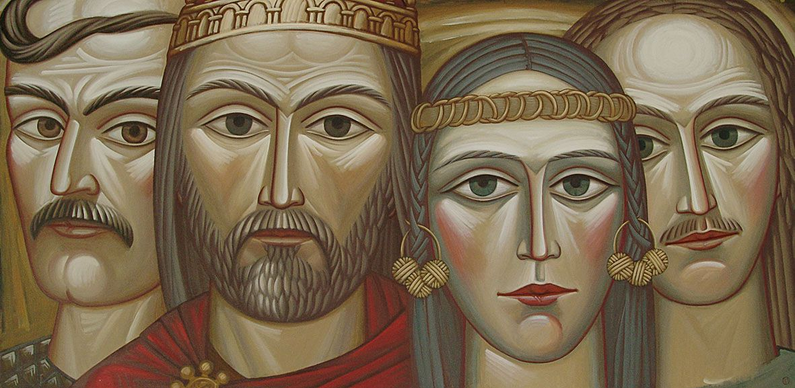

How to Kyiv became the biggest city of Ukraine
Kyi, Shchek and Khoryv (Ukrainian: Кий, Щек, Хорив, Old East Slavic: Кии, Щекъ, Хоривъ) were three legendary brothers—often mentioned along with their sister Lybid (Ukrainian: Либідь, Old East Slavic: Лыбѣдь)—who, according to the Primary Chronicle, founded the medieval city of Kyiv, which eventually became the capital of Kievan Rus` and present-day Ukraine. There is no precise and historically established information about the rule of Kyi and the establishment of the city of Kyiv.
Click here to see more on wikipedia
